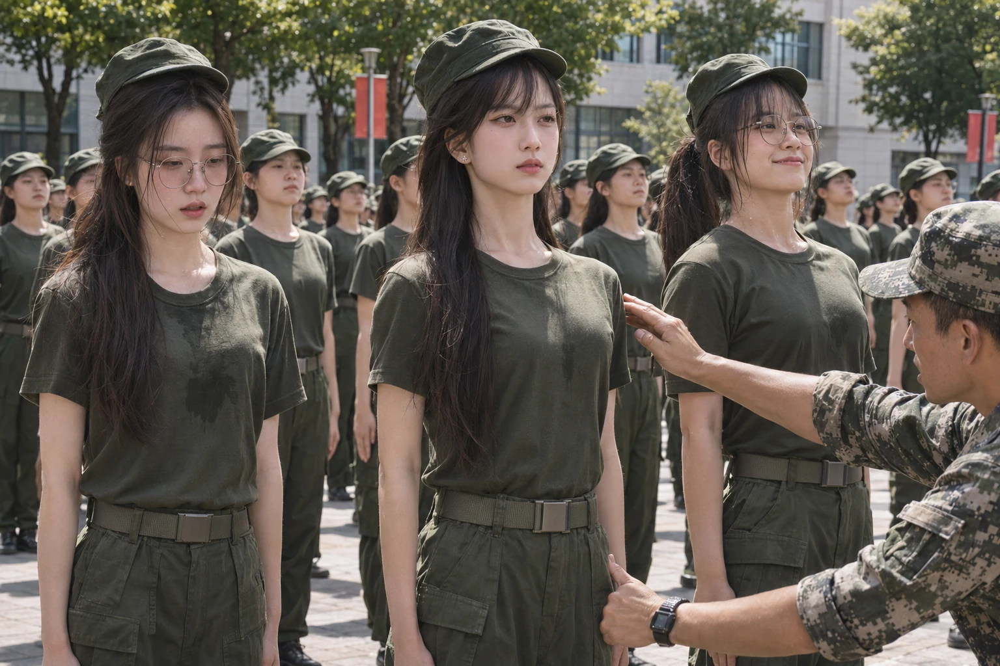
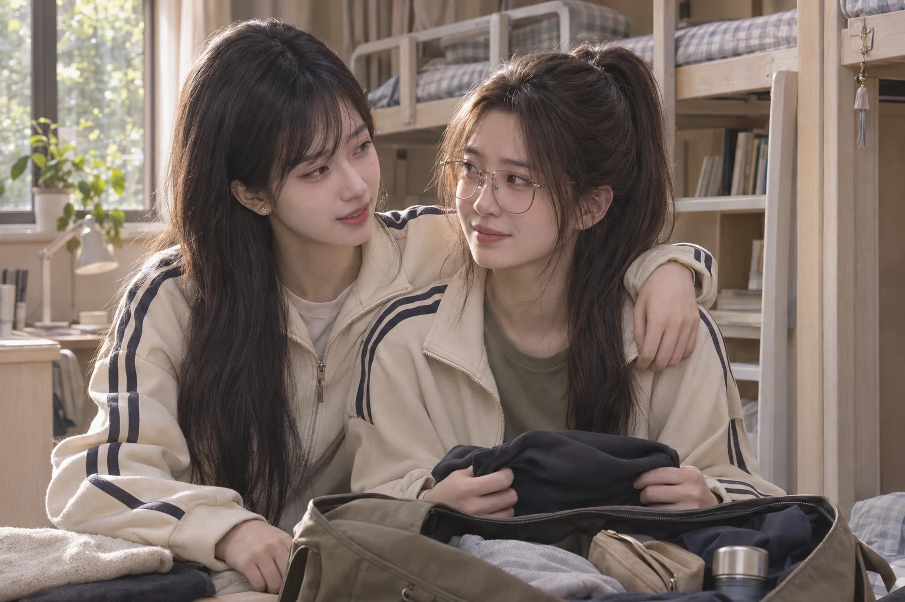
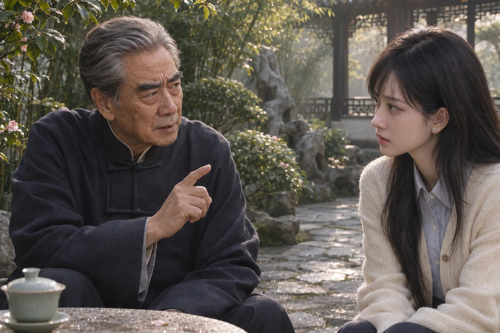

ตอนที่ 30
ฉินชาง
สัปดาห์แรกของการฝึกทหารภายในมหาวิทยาลัยชิงหวาเป็นไปอย่างทรหด ลานกว้างหน้าอาคารเรียนถูกย้อมด้วยแสงแดดสีทองอ่อน นักศึกษาปีหนึ่งหลายร้อยคนสวมชุดฝึกสีเขียวเข้ม ยืนเรียงแถวเป็นระเบียบ หมวกแก๊ปสีเดียวกันกดต่ำเหนือคิ้ว รองเท้าผ้าใบสีดำเรียงเป็นเส้นตรงจนแทบมองไม่เห็นช่องว่าง เสียงนกยามเช้าค่อย ๆ ถูกกลบด้วยเสียงนกหวีดแหลมของครูฝึก
“ตรง!” เสียงคำสั่งหนักแน่นดังไปทั่วทั้งสนาม แถวของนักศึกษาขยับเพียงเล็กน้อยก่อนหยุดนิ่งราวกับถูกหยุดเวลา ทุกคนยืดหลังตรง สายตาจับจ้องไปข้างหน้า เหงื่อเม็ดเล็กเริ่มซึมตามขมับแม้อากาศยังไม่ร้อนจัด
ซ่งอวิ๋นผิวคล้ำขึ้นเล็กน้อยจากการฝึกฝนตลอดหลายวัน เหงื่อหยดลงสู่ปลายคาง หากเธอไม่ได้ผ่านการฝึกศิลปะการต่อสู้ อาจทนไม่ไหวนานแล้ว
เพื่อนร่วมรุ่นเองก็มีสภาพร่างกายแย่เช่นกัน โดยเฉพาะเพื่อนใหม่ของเธออย่างหนานหรง ขณะที่เฉียวอันฉีถูกหามออกไปพักตั้งแต่การฝึกวันแรก ๆ เพราะร่างกายอ่อนแอ และคนที่ไม่น่าเป็นห่วงที่สุดคือฟ่านเยว่ ฝ่ายนั้นกระฉับกระเฉงและดูสนุกสนานอย่างน่าเหลือเชื่อ
ตลอดหลายวันที่ผ่านมา ซ่งหว่านและหนานชิวไม่ได้เข้ามาสร้างความวุ่นวายใด ๆ ทำตัวประหนึ่งน้ำบ่อไม่ยุ่งน้ำคลอง แม้ห้องพักของเจ้าหล่อนจะอยู่ถัดจากเธอไปเพียงสามห้องก็ตาม
ถึงอย่างนั้นซ่งอวิ๋นก็ไม่เคยลดการระแวดระวังภัย ด้วยไม่รู้ว่าแม่นางเอกจะสติเตลิด คิดแผนการแผลง ๆ มาเล่นงานเธอวันไหน
หลังครูฝึกตรวจแถว การฝึกเดินแถวเริ่มต้นขึ้น เสียงรองเท้ากระทบพื้นดังเป็นจังหวะเดียวกันสะท้อนก้องไปทั่วสนาม
ครูฝึกเดินตรวจทีละแถว คอยจัดท่าทางให้ถูกต้อง บางครั้งใช้ปลายนิ้วแตะไหล่หรือศอกเพื่อให้แนวแขนตรงตามระเบียบ นักศึกษาหลายคนพยายามกลั้นหายใจไม่ให้ขยับแม้แต่น้อย

เมื่อแดดสายแรงขึ้น อากาศร้อนอบอ้าวจนผิวหน้าแสบร้อน แต่ไม่มีใครบ่นออกมา เสียงคำสั่ง ‘ซ้ายหัน ขวาหัน’ ดังต่อเนื่องสลับกับเสียงตอบรับพร้อมเพรียง
ความเหน็ดเหนื่อยค่อย ๆ แปรเปลี่ยนเป็นความฮึกเหิมเมื่อทั้งแถวเริ่มเคลื่อนไหวพร้อมกันอย่างสวยงาม
ช่วงพักสั้น ๆ นักศึกษานั่งเรียงกันใต้ร่มไม้ จิบน้ำเงียบ ๆ บางคนใช้หมวกโบกลมให้เพื่อน เสียงหัวเราะเบา ๆ แทรกขึ้นท่ามกลางความอ่อนล้า ก่อนนกหวีดจะดังขึ้นอีกครั้งเรียกทุกคนกลับเข้าสู่สนามฝึก
กระทั่งเวลาล่วงเลยไปถึงช่วงเย็น สิ้นคำสั่งให้แยกย้าย พวกเขาต่างเดินสะโหลสะเหล หมดสภาพอย่างแท้จริง
“อาอวิ๋น.. ช่วงนี้เธอทำตัวแปลก ๆ โกรธฉันหรือเปล่า” เฉียวอันฉีถามขึ้นอย่างไม่แน่ใจระหว่างเดินขึ้นห้องพัก
“หืม? โกรธเรื่องอะไร” ซ่งอวิ๋นตีสีหน้างุนงง
“ก็วันนั้นฉันไม่ได้ช่วยออกตัวให้เธอ อย่าเข้าใจผิดนะ ฉันแค่เห็นว่าอาเยว่พูดเก่งกว่า ถ้าฉันพูดเสริม เดี๋ยวจะกลายเป็นฟังไม่รู้เรื่อง”
“คิดมากเกินไปแล้ว ช่วงนี้ฉันแค่เหนื่อย ๆ ไม่ได้โกรธเลยจริง ๆ”
“โล่งอกไปที..”
“ฉันไม่อยากกลับบ้านเลย” หนานหรงพึมพำเสียงแผ่ว วันนี้ต้องกลับบ้านไปเจอบรรยากาศน่าอึดอัดอีกแล้ว ไม่รู้ว่าพ่อเตรียมคำตำหนิอะไรไว้รอบ้าง โดยเฉพาะตัวเสริมอย่างภรรยารองคนนั้น
แต่จะไม่กลับก็ไม่ได้ แม่ของเธอยังป่วยหนัก เธอเป็นห่วงท่านจนบางครั้งก็นอนไม่หลับ
“กลับเถอะ เชื่อฉัน.. ทุกอย่างจะไม่เป็นไร” ซ่งอวิ๋นกอดไหล่หนานหรง
“อื้ม ขอบใจนะอวิ๋นเอ๋อร์ เธอใจดีจริง ๆ” หนานหรงมองเพื่อนอย่างซาบซึ้ง
ตลอดห้าวันที่ได้กินนอนด้วยกัน เธอพบว่าซ่งอวิ๋นเป็นเพื่อนที่ดีมาก ไม่เพียงใจดี และมีพลังบวกเท่านั้น แต่บางครั้งทัศนคติของอีกฝ่ายก็ทำให้เธอได้ทบทวนเรื่องบางเรื่องในมุมมองที่แตกต่างออกไป
“อย่าลืมนะ ถ้าไม่ผิดอย่าปล่อยให้คนอื่นรังแกเด็ดขาด” ซ่งอวิ๋นกำชับระหว่างเก็บของใส่กระเป๋า วันนี้เธอจะกลับบ้านเหมือนกัน ต่อให้เหนื่อยสายตัวแทบขาดขนาดไหน เธอก็ยังอยากกลับไปให้ปู่กับแม่เห็นหน้า

ขณะที่เฉียวอันฉีกลับบ้านไปเมื่อครึ่งชั่วโมงก่อนแล้ว
“ฉันเข้าใจแล้ว” หนานหรงพยักหน้ารัว ๆ อันที่จริงเธอแทบไม่ได้เล่าให้เพื่อนฟังเลยว่าเกิดเรื่องอะไรขึ้นในบ้านหนาน ซ่งอวิ๋นก็ไม่เคยละลาบละล้วงแต่คนฉลาดคงประเมินจากสถานการณ์ได้
“แล้วอาเยว่อยู่คนเดียวเหงาหรือเปล่า”
เนื่องจากบ้านของฟ่านเยว่อยู่ไกล เธอจึงไม่กลับบ้านในวันหยุดสุดสัปดาห์ เลือกจะกลับเฉพาะวันหยุดยาวเท่านั้น
“ไม่เหงาหรอกน่า เพื่อนที่คณะก็ไม่ได้กลับเหมือนกัน นัดกันไปกินหม่าล่าทั่งแล้วด้วย ถ้าอร่อยแล้วจะมาบอกนะ” ฟ่านเยว่โบกมือหย็อย ๆ ไม่อยากให้เพื่อนเป็นห่วง
“ถ้าอร่อยต้องพาพวกเราไปกินบ้างนะ” หนานหรงอมยิ้ม การได้อยู่กับเพื่อนกลุ่มนี้ ทำให้เธอสดใสสมวัยขึ้นมาก
“ได้แน่นอน ฉันไปตระเวนชิมมาหลายร้าน จดชื่อไว้หมดแล้ว ถ้าพวกเธอพร้อมเมื่อไหร่ก็บอก เดี๋ยวฉันพาไป รับรองว่าไม่ผิดหวัง” เธอตบหน้าอกตัวเอง พวกชอบเสาะหาของอร่อยอย่างเธอ จะทำให้เพื่อน ๆ ผิดหวังได้อย่างไร
...
ซ่งอวิ๋นลากกระเป๋าและเดินออกไปยังลานจอดรถของมหาวิทยาลัยพร้อมพี่ชายคนโต แม้ตอนนี้พระอาทิตย์ใกล้ตกดินแล้ว แต่มหาวิทยาลัยก็ยังครึกครื้น มีนักศึกษารุ่นพี่ปั่นจักรยานผ่านเธอไปหลายคัน
“เหนื่อยมากเลยใช่ไหม ตอนพี่ใหญ่ฝึกทหารก็เกือบเป็นลมไปเหมือนกัน” เจียงซูช่วยน้องสาวถือของพะรุงพะรัง วันนี้เขาจะขับรถไปส่งน้องที่บ้าน
“เหนื่อยค่ะ แต่ยังไหวอยู่” ซ่งอวิ๋นกำหมัดและเขย่าไปมากลางอากาศอย่างสดใส
สองพี่น้องเดินมาเรื่อย ๆ กระทั่งซ่งอวิ๋นเงยหน้าขึ้นพบใครบางคนกำลังเดินสวนมา หัวใจของซ่งอวิ๋นบีบรัดรุนแรง ราวกับถูกมือที่มองไม่เห็นบีบแน่น ลมหายใจติดขัดอยู่ในลำคอชั่วขณะ นิ้วมือกำกระเป๋าแน่นขึ้นจนข้อนิ้วซีดขาว ทว่าเธอเก็บอาการด้วยสีหน้าสงบนิ่งและรอยยิ้มอ่อน ๆ ประดับมุมปาก
ฉินชาง.. พระเอกนิยายโรคจิต เธอจำเขาได้ดีเพราะในจังหวะที่ดินกลบหน้า เขายังยืนยิ้มสบาย ๆ อยู่ตรงปากหลุม แววตาดำมืดนั้นติดตาเธอจนถึงตอนนี้
ซ่งอวิ๋นเดินสวนไปพร้อมพี่ชาย ทำเหมือนเขาเป็นอากาศธาตุ แต่ตลอดเวลาเธอรับรู้ได้ว่าแววตาคู่นั้นเสมือนอสรพิษจับจ้องเหยื่อ
“ทำเงินตกหรือเปล่าครับ” ฉินชางซึ่งกำลังจะเดินสวนไปหยุดยืนอยู่กับที่ นัยน์ตาคมจับจ้องดวงหน้ารูปไข่ที่หันกลับมามองเขาอย่างงุนงง
“อ่า.. น่าจะไม่ใช่ของฉันนะคะ ฉันไม่ได้พกเงินสด” ซ่งอวิ๋นว่าแล้วก็ผงกศีรษะน้อย ๆ แล้วสาวเท้าไปข้างหน้าอย่างมั่นคง ท่ามกลางการจับจ้องจนแผ่นหลังแทบพรุนของชายหนุ่มแซ่ฉิน
เจียงซูหนังตากระตุก หันกลับไปมองด้านหลังตามสัญชาตญาณก็พบว่าอีกฝ่ายเดินจากไปไกลแล้ว
“มีอะไรหรือเปล่าคะพี่ใหญ่”
“ไม่มีอะไร กลับบ้านกันเถอะ”
“โอเคค่ะ” ซ่งอวิ๋นถอนหายใจเบา ๆ
หากให้กล่าวถึงตระกูลฉิน ตระกูลนี้ทำตัวลึกลับ เคยเป็นตระกูลที่ทรงอำนาจในแวดวงการเมือง ก่อนจะถอยฉากออกไปอย่างเงียบ ๆ และไม่ค่อยเผยตัวตนให้ใครเห็นเท่าไหร่นัก แต่พวกเขาก็ยังอยู่เบื้องหลังธุรกิจหลากหลายโดยไม่ออกหน้า
กลับไปเธอต้องถามข้อมูลจากปู่ซ่ง บางทีท่านอาจรู้มากกว่า
“พี่ฉิน.. ยังไม่กลับบ้านอีกเหรอคะ” ซ่งหว่านประหลาดใจเมื่อลากกระเป๋าออกมาแล้วเห็นฉินชางยืนอยู่
เธอรู้จักกับเขาได้ไม่นาน กลับรู้สึกราวกับว่ารู้จักกันมาสิบปี เขาใจดีกับเธอ เข้าใจปมที่เธอเก็บซ่อนไว้ลึก ๆ ในใจ ไม่ต่อว่าหรือตัดสินว่าสิ่งที่เธอคิดนั้นผิด เพียงพูดสั้น ๆ ว่าถ้าอยากให้ช่วยอะไรก็แค่บอก
ถึงอย่างนั้นความสัมผัสระหว่างเราก็ยังไม่ได้พัฒนาไปมากกว่าคำว่าพี่น้องที่หวังดีต่อกัน ลึก ๆ เธอก็ยังไม่อยากเชื่อว่าผู้ชายที่สมบูรณ์แบบขนาดนี้จะมาชอบเธอ
“ยังครับ พี่รอเธออยู่.. ก่อนกลับบ้าน เธอไปกินข้าวด้วยกันสักมื้อได้ไหม” ฉินชางถามเสียงนุ่ม
“ที่ไหนเหรอคะ”
“ร้านรอบ ๆ มหาลัยก็ได้ครับ หรือถ้าเธอไม่สะดวกก็ไม่เป็นไรนะ พี่เข้าใจ”
“สะดวกค่ะ” ซ่งหว่านรีบตอบตกลงทันที ผู้ชายอบอุ่นธงเขียวแบบนี้ มีใครบ้างที่ไม่อยากอยู่ใกล้
หากซ่งอวิ๋นรู้ความคิดซ่งหว่าน เธอคงเถียงขาดใจ ‘ธงเขียวกับผีน่ะสิ นั่นน่ะธงดำตัวพ่อเลยต่างหาก ไม่อย่างนั้นนิยายเรื่องนิยายเรื่องนี้จะใช้ชื่อว่า วาสนารักพระเอกธงดำได้ยังไง’
...
“โธ่ เหนื่อยมากเลยใช่ไหมลูก ดูสิ ผิวเสียหมดเลย” โจวจิ่วจับลูกสาวหมุนตัวไปมา จากนั้นก็หันไปหาหลานชาย “ขอบใจนะลูกเจ้าใหญ่ กินข้าวมาหรือยัง ป้าเตรียมอาหารไว้เต็มโต๊ะเลยนะ”
“ฝากท้องด้วยนะครับคุณป้า ผมกำลังหิวพอดี” ชายหนุ่มลูบท้องป้อย ๆ ก่อนช่วยน้องสาวขนสัมภาระไปเก็บในห้อง
เมื่อซ่งอวิ๋นจัดการธุระส่วนตัวเรียบร้อยแล้ว เธอก็ลากร่างอ่อนแรงมาทานอาหารร่วมกับครอบครัว แต่เพราะเธอเหนื่อยมากเกินไป จึงทานอาหารได้เพียงครึ่งจาน จากนั้นก็ขึ้นนอนทันที
รุ่งเช้า
ผู้เฒ่าซ่งออกกำลังกายในสวนตั้งแต่ฟ้ายังไม่สว่าง จนพระอาทิตย์โผล่พ้นขอบฟ้า ขณะที่เขาคิดจะกลับเข้าบ้าน ก็เห็นหลานสาวเดินสวนออกมาพอดี
“คุณปู่ออกกำลังกายเสร็จแล้วเหรอคะ”
“อืม ทำไมหลานตื่นเช้าแบบนี้ พักอีกหน่อยเถอะ”
“หนูมีเรื่องอยากรู้เกี่ยวกับตระกูลฉินค่ะ คุณปู่เคยได้ยินบ้างไหมคะ”
หัวคิ้วสีดอกเลาขมวดเข้าหากันเล็กน้อย ก่อนคลายลงแล้วถามกลับ “คนตระกูลฉินมายุ่งวุ่นวายหรือเปล่า”
“เปล่านะคะ”
“ดีแล้ว เป็นไปได้ก็อย่าไปยุ่งเลย สายหลักกับสายรองกำลังชิงอำนาจกัน ตาเฒ่าฉินก็กำลังจะตาย วันหน้ามีแต่จะวุ่นวายมากขึ้นเรื่อย ๆ”

ซ่งอวิ๋นกลืนไม่เข้าคายไม่ออก ถึงเธอเห็นเรื่องราวต่าง ๆ ในความฝัน และได้รับรู้ว่าตัวเองเป็นแค่หนึ่งในตัวประกอบของนิยาย แต่เรื่องที่เธอรู้ส่วนมากเกี่ยวข้องกับตนเองและการล่มจมตระกูลซ่ง ข้อมูลเกี่ยวกับพระเอกยังน้อยนิดเหลือเกิน